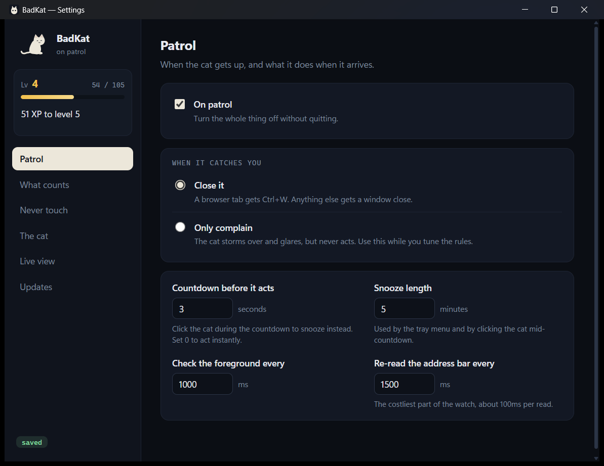
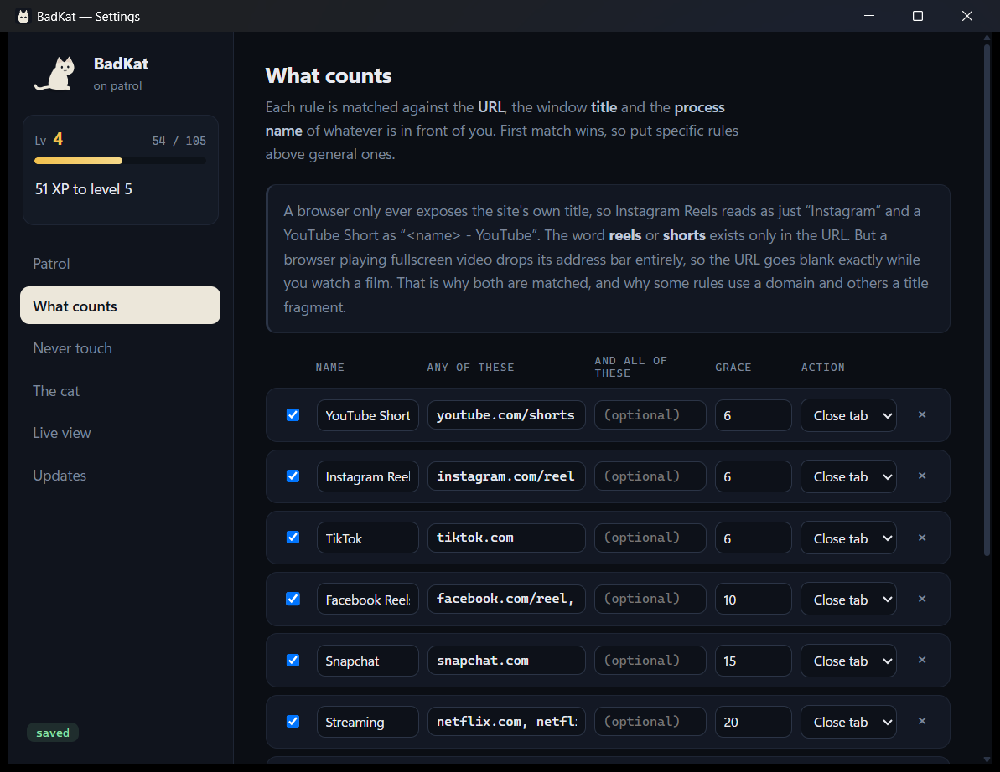
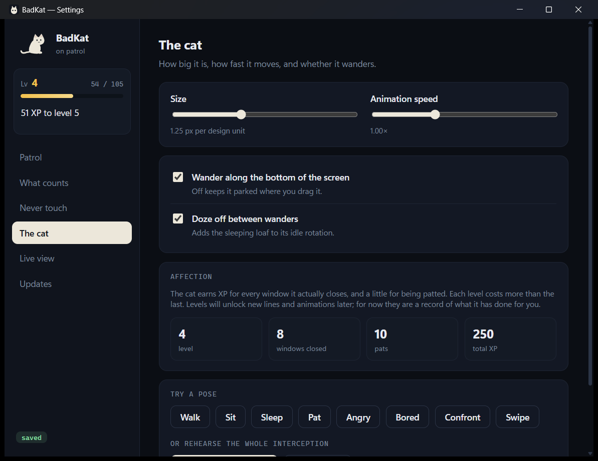

It watches the foreground
Every second it reads the window in front of you — the URL, the title and the process name. The check happens on your machine and the answer is thrown away.
Free · open source · Windows 10 & 11
BadKat sits along the bottom of your screen. When Shorts, Reels, TikTok or a streaming site holds the foreground for too long, it gets up, walks over, and taps the window closed with one paw.
Loading the latest release…
Not a video — that's the real character running the same rig as the app. Poke it.
How it works
Every second it reads the window in front of you — the URL, the title and the process name. The check happens on your machine and the answer is thrown away.
Shorts and Reels get six seconds. Instagram proper gets forty-five. Ordinary YouTube gets four minutes, because plenty of YouTube is work. Every rule and every timer is yours to change.
The cat walks to the offending window, plants itself, and counts down. Click it during the countdown and it relents. Ignore it and the paw lands — Ctrl+W for a tab, a close for anything else.
Inside the app



Levels
Every window it closes earns XP, and so does patting it. Each level costs more than the last, so the number means something by the time it gets high. Level-ups will unlock new lines and animations.
Try it: hit Level up on the cat at the top of this page.
The meter sits in the sidebar, visible from every panel.
Get it
Windows 10 and 11. Installs to your user folder, so it needs no admin rights, and it updates itself from inside the app — you will not have to come back here.
Fetching the latest version from GitHub…
Questions
No. There is no account, no analytics and no server. The only network request BadKat ever makes is asking GitHub whether a newer release exists.
It only acts on rules you can see and edit, and anything on the Never touch list is left alone whatever else it matches. If you want to watch it work before trusting it, switch it to Only complain — the cat still storms over and glares, but never acts.
Yes. Turn On patrol off and it becomes an ordinary desktop pet that wanders, sleeps, and lets you drag it around and drop it.
Quit from the tray icon, or uninstall it like any Windows app. It installs to your own user folder and leaves nothing behind in system directories.
A progress bar telling you that you have watched Reels for forty minutes is easy to close and easier to ignore. Something with a face that walks over and looks at you is harder.
Open source
All of it — the Rust backend, the animation rig, the release pipeline. MIT licensed.